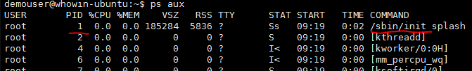
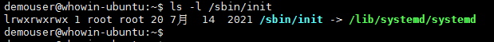
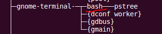
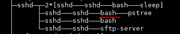

bash 的环境变量和 shell 变量
; # bash 的环境变量和 shell 变量
导言
- shell 是一个 Linux 的命令行解释器，Linux 下有很多 shell，其中 ubuntu 中默认的 shell 是 bash(Bourne-Again SHell)，bash 是 GNU (Gnu’s Not Unix)开发的
- 使用 cat /etc/shells 命令可以看到在你的 Linux 下有那些 shell；使用 echo $SHELL 可以看到当前你正在使用的 shell
- 本文中如无特别说明，shell 指的是 bash，所有范例在 ubuntu 16.04 下完成，在更高版本的 ubuntu 上，可能会有些微区别；在较低版本的 ubuntu 上不能保证有相同的效果
终端是如何启动 shell 的
- ubuntu 的1号进程是 systemd，这是 ubuntu 在加载完 Linux 内核后启动的第一个进程，是所有其它进程的祖宗
- 你可能用 ps aux(ps -ef) 命令发现1号进程是 /sbin/init，而不是 systemd，但你用 ls -l /sbin/init 看一下就会恍然大悟

图1：1号进程
图2：/sbin/init指向systemd - 当你在 ubuntu 桌面版上启动一个终端时，会启动一个 gnome-terminal 进程，gnome-terminal 进程启动了 bash 进程，这样你就看到可爱的提示符了，这个过程使用 pstree 命令一目了然

图3：gnome-terminal进程启动bash - 当你使用 ssh 客户端远程登录到 Linux 系统时，bash 进程是由 sshd 进程启动的，这个也可以用 pstree 命令看到

图4：sshd进程启动bash - 只有启动了 bash 你才拥有了一个 shell 环境，你才能够在终端上输入命令，你从键盘输入的任何内容都必须由 bash 进行解释并做出进一步的处理
shell 变量和环境变量
-
shell 变量
- shell 管理着一个变量表，这使得用户可以自己定义变量，这些变量是在 shell 下建立，由 shell 管理，在 shell 下使用
- 在启动 shell(bash) 的时候，shell 会创建一些变量(不同的 shell 创建的变量会有所不同)，同时，shell 在启动过程中还会去执行一些可以由客户自定义的脚本，比如：在启动bash时会执行：/etc/bash.bashrc，在登录时会执行：~/.bashrc等，这些脚本通常也会建立一些变量
- 由于有些脚本是在用户登录时执行的，比如：~/.bashrc，而这个脚本是放在用户的home目录下的，这就使得不同的用户在登录时可以执行不同的脚本，从而每个用户在登录后所建立的 shell 变量也可以是不一样的
- 在 shell 下，可以直接用：变量名=变量值 的方法定义或修改 shell 变量；也可以用：unset 变量名 来删除变量，按照惯例，shell 变量名使用大写字母
- 使用 set 命令可以查看当前所有的 shell 变量；用 echo $变量名 可以显示指定变量名的值
-
环境变量
- 环境变量也是shell变量，我们姑且暂时把不是环境变量的shell变量称作普通shell变量，在bash内部，环境变量与普通shell变量的区别，仅仅是一个不同的标记而已
- 环境变量和普通shell变量的最主要的区别是，在建立一个子进程时，环境变量会被传递给这个子进程，而普通shell变量不会，所以，环境变量可能会对一个子进程的行为产生影响，因为子进程可以根据环境变量的值做出不同的动作
- 环境变量可以使用 export 变量名=变量值 进行设置，可以像普通shell变量一样用 unset 变量名 进行删除
- 可以使用 printenv 命令查看所有的环境变量；用 echo $变量名 可以显示指定环境变量的值；也可以用 printenv 环境变量名 来显示一个环境变量的值
- env 如果不带参数的话，也是可以显示环境变量的，但这个命令主要用于在指定环境下执行命令
-
关于 env 命令的两个例子
- env 环境变量名=变量值和env -u 环境变量名 都只能临时在一个新的环境中改变或者删除一个变量，用于在一个指定的环境中执行命令，这一点在大多数网上的文章中都没有明确说明
- 下面的例子设置了一个临时环境变量 ENV_VAR_1，并且在这个临时环境中将这个变量的值打印出来
$ printenv ENV_VAR_1 # 当前环境下，不存在环境变量 ENV_VAR_1 $ env ENV_VAR_1=first_value printenv ENV_VAR_1 # 临时设置环境变量并打印出值 first_value # 临时设置的环境变量ENV_VAR_1的值 $ printenv ENV_VAR_1 # 当前环境下，仍然不存在环境变量 ENV_VAR_1 $ - 下面的例子中在临时环境中删除一个在当前环境中存在的环境变量，在临时环境中打印该环境变量为空，确定该环境变量在临时环境中已经不存在
$ export ENV_VAR_2=second_value # 当前环境下设置环境变量 $ printenv ENV_VAR_2 # 打印该环境变量的值 second_value $ env -u ENV_VAR_2 printenv SHELL ENV_VAR_2 USER # 临时删除该环境变量，并在临时环境中打印该变量 /bin/bash # SHELL变量的值 demouser # USER变量的值，偏偏没有变量ENV_VAR_2的值 $ printenv ENV_VAR_2 # 当前环境下打印环境变量ENV_VAR_2 second_value $
-
环境变量和普通shell变量的转换
- 普通shell变量，通过 export 变量名 可以转变成环境变量
$ set|grep VAR_TO_ENVVAR # 没有VAR_TO_ENVVAR这个shell变量 $ VAR_TO_ENVVAR=convert_var_to_envvar # 设置VAR_TO_ENVVAR $ set|grep VAR_TO_ENVVAR # VAR_TO_ENVVAR是一个shell变量 VAR_TO_ENVVAR=convert_var_to_envvar $ printenv|grep VAR_TO_ENVVAR # VAR_TO_ENVVAR不是一个环境变量 $ export VAR_TO_ENVVAR # 执行export命令 $ printenv|grep VAR_TO_ENVVAR # VAR_TO_ENVVAR已经变成一个环境变量 VAR_TO_ENVVAR=convert_var_to_envvar $ - 普通shell变量，通过 declare -x 变量名 可以转变成环境变量
$ unset VAR_TO_ENVVAR # 删除变量VAR_TO_ENVVAR $ VAR_TO_ENVVAR=convert_var_to_envvar # 设置VAR_TO_ENVVAR $ set|grep VAR_TO_ENVVAR # VAR_TO_ENVVAR是一个shell变量 VAR_TO_ENVVAR=convert_var_to_envvar $ printenv|grep VAR_TO_ENVVAR # VAR_TO_ENVVAR不是一个环境变量 $ declare -x VAR_TO_ENVVAR # 执行declare命令 $ printenv|grep VAR_TO_ENVVAR # VAR_TO_ENVVAR已经变成一个环境变量 VAR_TO_ENVVAR=convert_var_to_envvar $ - 环境变量，通过 declare +x 变量名 可以转变成普通shell变量
$ export ENV_VAR_1=testing # 设置一个环境变量 $ printenv|grep ENV_VAR_1 # 确认设置成功 ENV_VAR_1=testing $ declare +x ENV_VAR_1 # 执行declare +x命令 $ printenv|grep ENV_VAR_1 # 该变量已经不再是环境变量 $ set|grep ENV_VAR_1 # 该变量仍然是一个普通shell变量 ENV_VAR_1=testing $ - declare 变量名=变量值 可以用来设置或修改一个普通shell变量的值；declare -x 变量名=变量值 可以用来设置或修改一个环境变量的值；declare -x 变量名 可以将普通shell变量变成环境变量；declare +x 变量名 可以将环境变量变成普通shell变量
- 普通shell变量，通过 export 变量名 可以转变成环境变量
bash 如何将环境变量传给子进程
- bash如何执行一个命令
- shell在收到一个换行符(new line，ASCII码0x0A)时开始解释命令行的命令
- shell查找命令是否由别名(alias)，如果有则用别名代替命令
- 如果命令中不包含 “/"，shell 首先查找同名函数，如果有，执行这个函数即可
- 如果没有同名函数则查找内建命令，如果是内建命令，则在bash内部执行即可
- 如果也不是内建命令，则根据环境变量 PATH 的顺序查找命令文件
- 如果找不到命令文件，则显示错误信息并回到提示符接收下面的命令
- 如果找到命令文件或者命令中有 “/” 字符，bash 会 fork 一个子进程，自身进程执行 wait() 等待子进程结束，然后在子进程中执行 execve()，一切的其他工作交给 execve() 来处理
- 环境变量的传递
- 我们看一下 execve() 的手册

- 在执行 execve() 时，需要传递三个参数过去，filename - 要执行的程序文件名；argv[] - 执行这个程序需要的参数；envp - 环境变量；环境变量就是这样传递给了可执行程序
- execve() 在执行时首先要读出文件的前128个字节，用以分析文件的类别，以便用适当的方式执行这个文件；比如：shell脚本文件的前两个字符是 ”#!"，这一点在手册中有明确说明；ELF文件的前四个字符是：0x45 0x4c 0x46 0x7c等，还有其它不同的可执行格式
- 我们看一下 execve() 的手册
- 一个打印环境变量的C程序
- 该程序只是验证传递给子进程的环境变量不包括普通shell变量
- 源代码，文件名：print_env.c
#include<stdio.h> extern char **environ; int main() { int i; for (i = 0; environ[i]; i++) printf("*%s\n", environ[i]); return 0; } - 编译执行
$ gcc print_env.c -o print_env $ ./print_env - 本程序打印出的环境变量与 printenv 命令打印出的结果一致
Last modified on 2022-04-03